Home
"To me, photography is an art of observation. It’s about finding something interesting in an ordinary place."
— Elliott Erwitt—
ABOUT
As an amateur artist, I have roamed the streets with my camera in hand for over five years. Since discovering film photography in 2022, I have crafted a poetic and dreamlike visual universe. The spaces I travel through serve merely as a pretext to renew my gaze.
The time I don't spend on my studies, I divide between the darkroom, the streets, exhibitions, and photobooks. These moments of inspiration are essential to refining my vision. Photographers such as Bernard Plossu, Saul Leiter, Sarah Van Rij, Raymond Depardon, Claude Batho, Shoji Ueda, and Bernard Descamps have contributed to this enhancement of my gaze. I also draw profound inspiration from Italian neorealism films (Rossellini, Pasolini, Fellini,...) and post-war Japanese cinema (Ozu).

WORK
CONTACT


 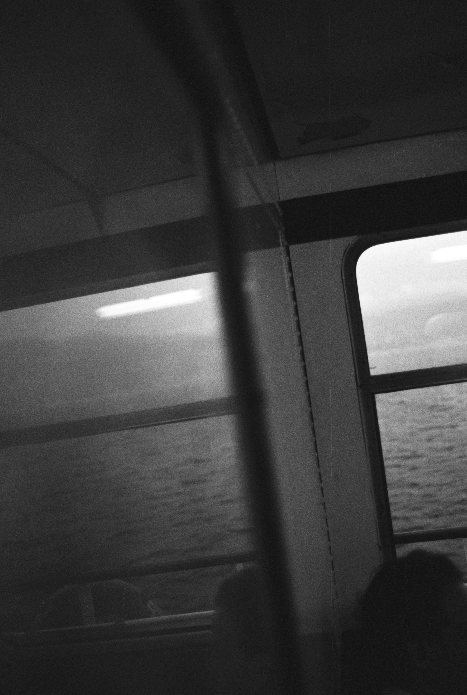
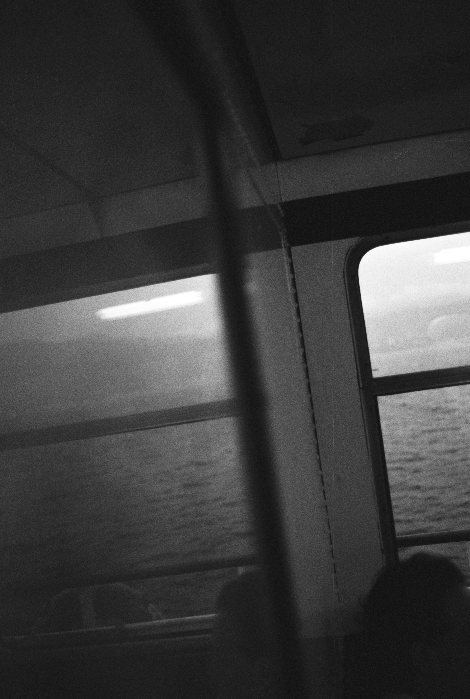


 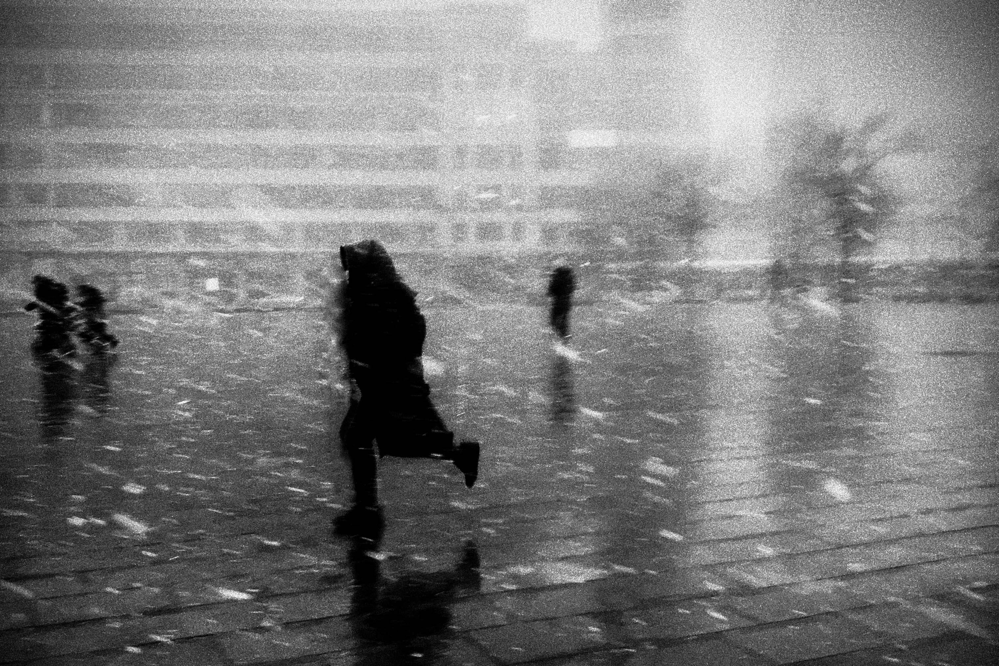
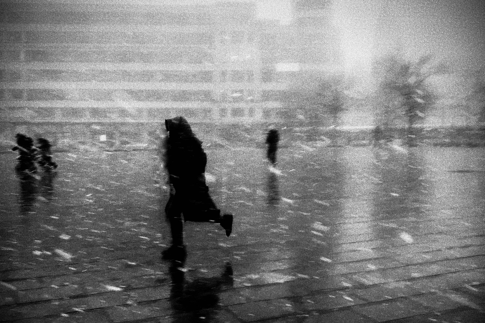
 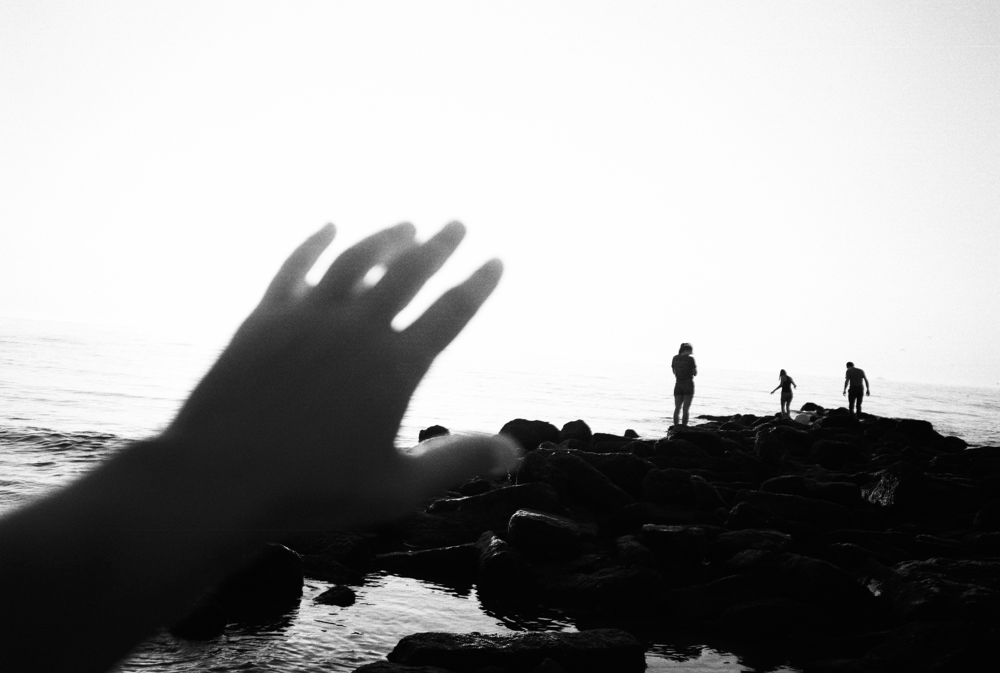
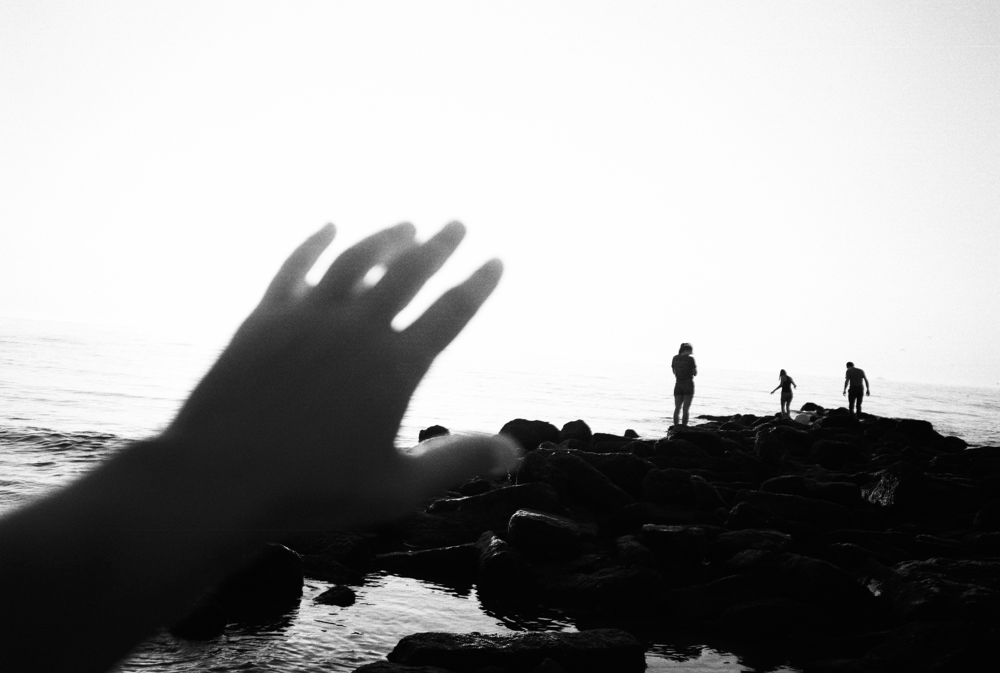
 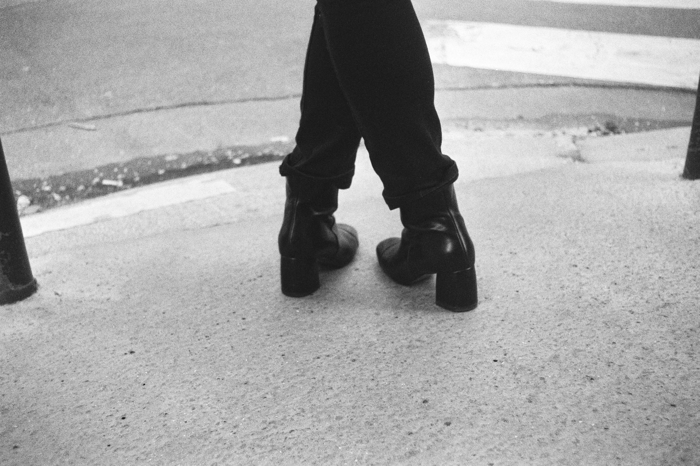
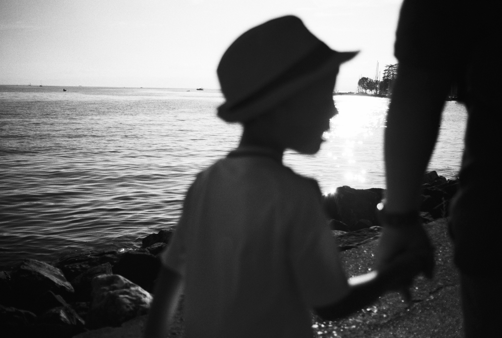
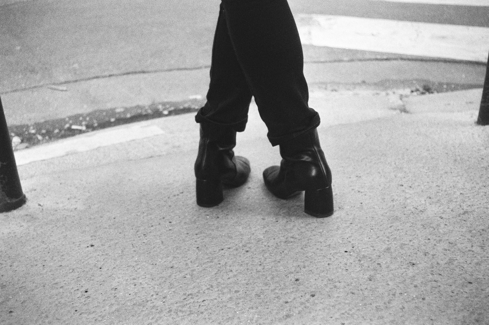
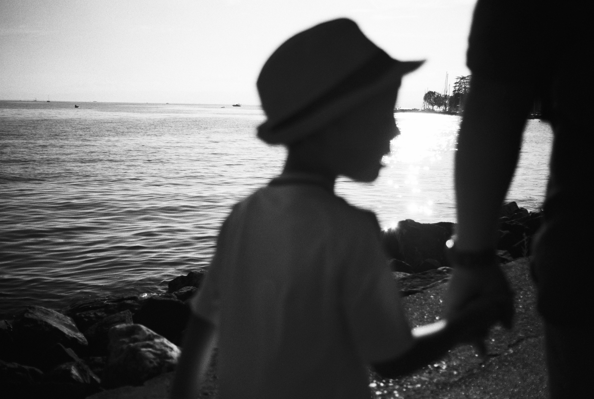


 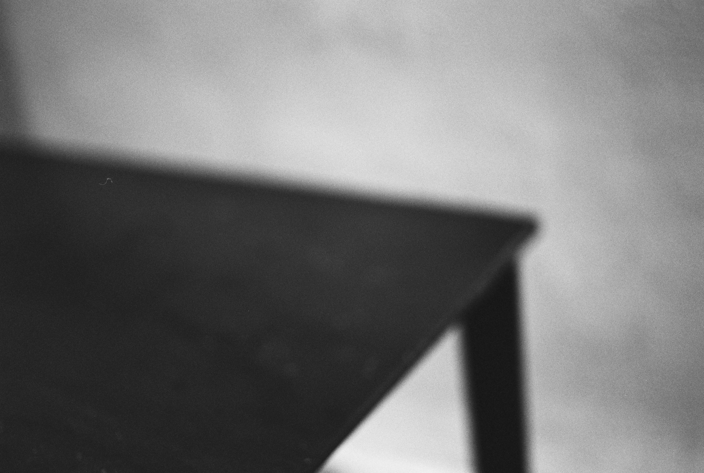
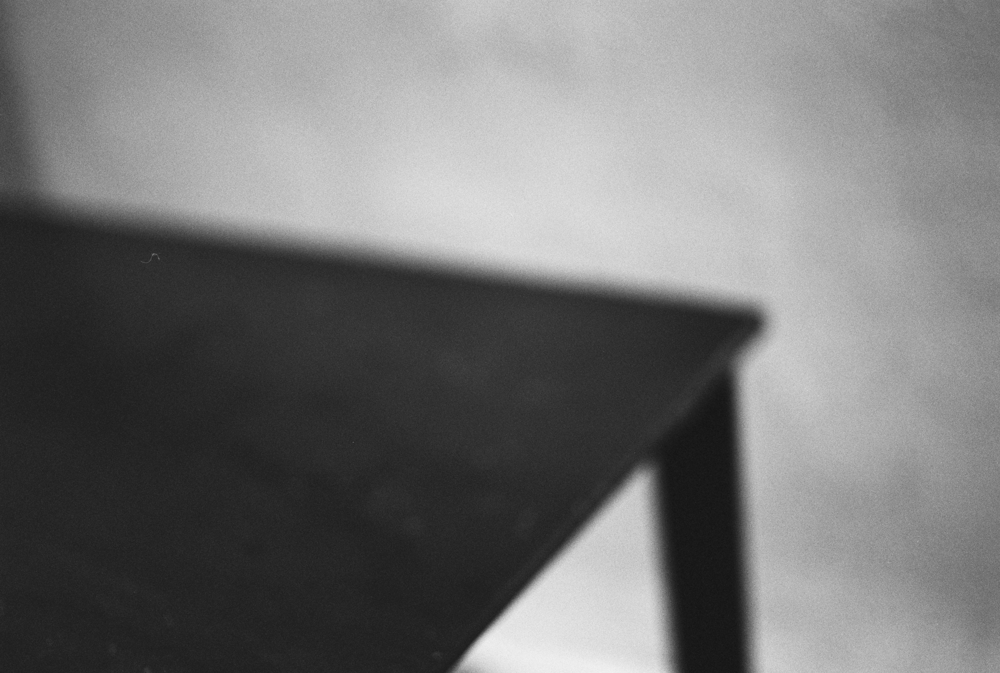
 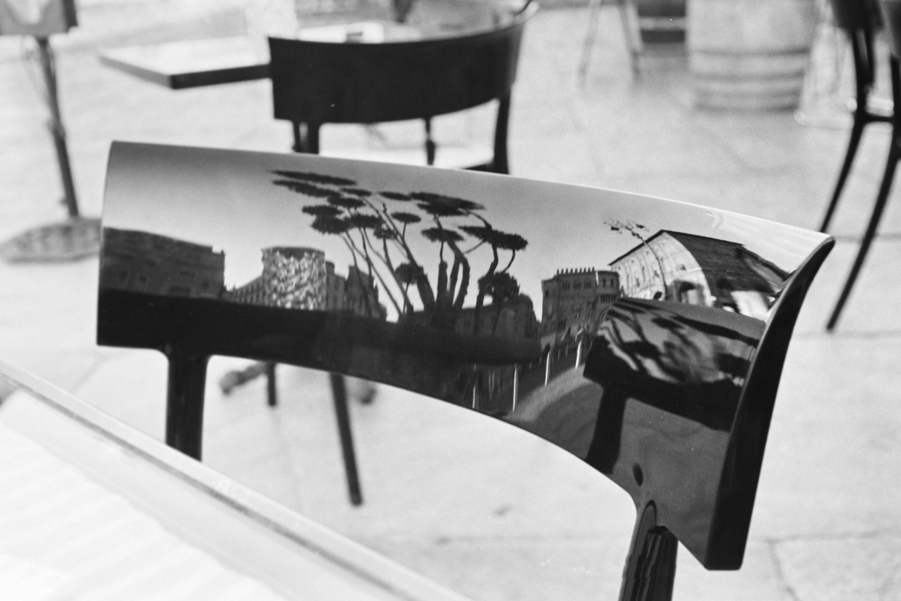
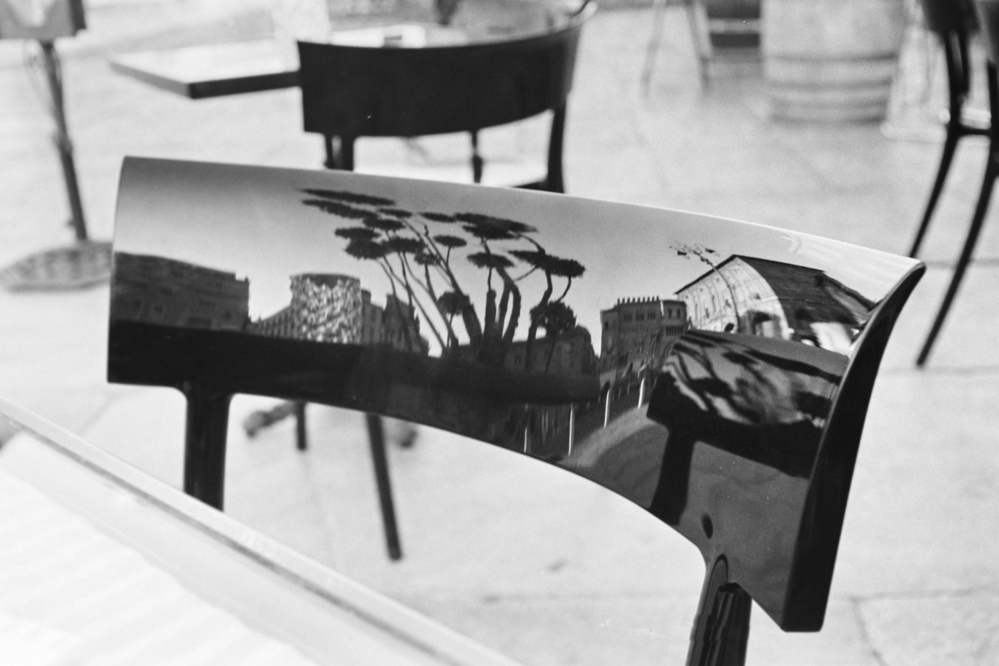